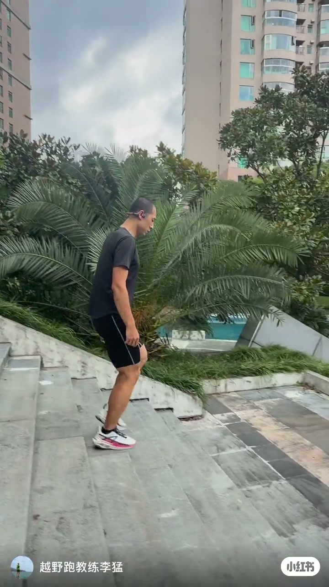
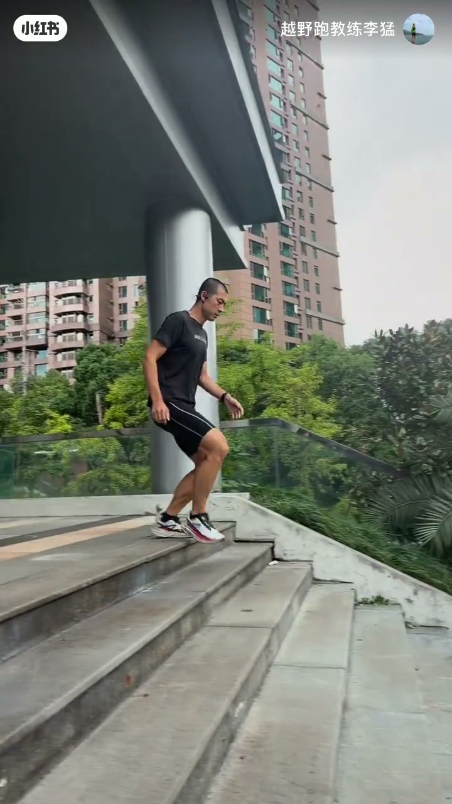

画面纪实
账号「越野跑教练李猛」在小区户外台阶做下坡跑演示：骨传导耳机、短袖短裤跑鞋，身体略前倾、屈膝连续落阶。标题承诺「一个技巧一个坑」，但 11 秒成片内未见清晰大字幕，音频可辨口播极短。

[00:02] 教练在小区台阶演示下坡跑姿态（口播 ASR 几乎未识别）
Coach demo of downhill stair running posture (ASR nearly empty).

[00:06] 下坡台阶连续落脚；标题提示「一个技巧一个坑」，细节以画面为准
Continuous downhill steps; title says one tip and one pitfall—details rely on visuals.
完整转录
（几乎为空）先把这2…